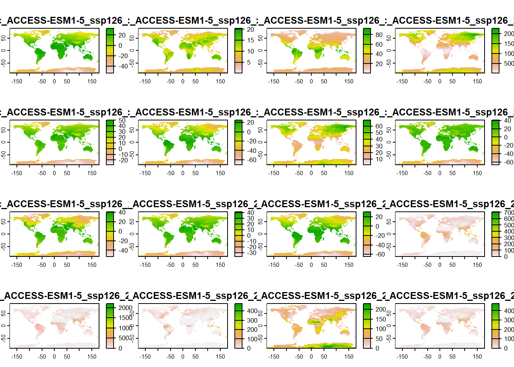
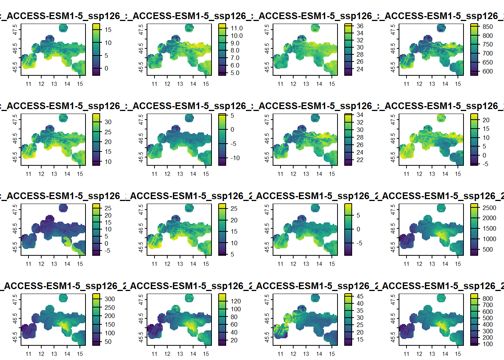
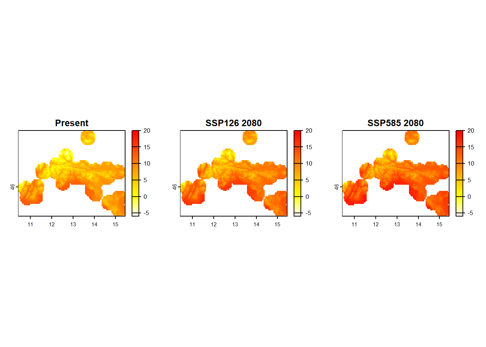
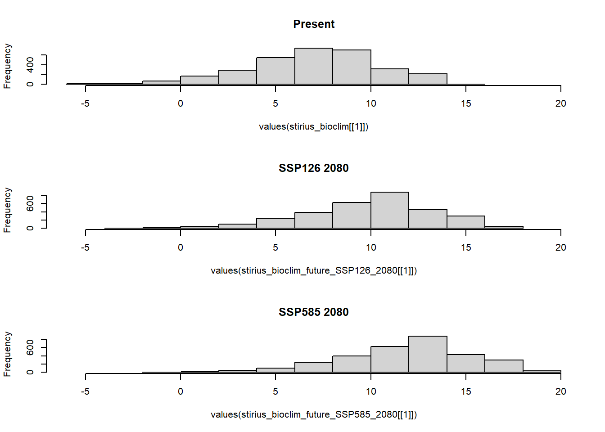

stirius_pa_final <- readRDS("01_data/stirius_pa_final.RDS")
Summary
In this lab you will:
- be introduced to IPPC’s Shared Socio-economic Pathways (SSPs),
- use R code to access the CMPI6 worldclim data for different SSPs from the server and download it,
- compare present and future data,
- create species distribution projections for the future environmental data and
- display them all on the same leaflet map.
Before we start
Task
Open the folder
Introduction to species distribution models,Start RStudio from the
Rproject iconnamedIntroduction to species distribution models.Open the R script named
Erebia stirius.When following this lab, continue to copy & paste the code in the script so it is organised as it is in teaching materials.
Lab plan

Data import from previous labs
First, load the data that we prepared in our previous labs. The datasets are saved as .RDS files in 01_data folder, we will import them using readRDS() function and assign them to the objects with same names as in lab 2:
- Erebia stirius occurrences and pseudo absences with environmental data -
stirius_pa_final, - E. stitirus buffer around the presence points -
stirius_buffer, - E. stirius bioclimatic background -
stirius_bioclim.
stirius_buffer <- terra::vect(readRDS("01_data/stirius_buffer.RDS"))library(terra)
stirius_bioclim <- crop(geodata::worldclim_global(var = "bio",
res = 2.5,
path = "01_data"),
stirius_buffer,
mask = TRUE)IPCC RCP and SSP Scenarios & future bio-climatic data
Intergovernmental Panel on Climate Change (IPCC) defined multiple scenarios (Representative Concentration Pathways scenarios: RCP 26, 45, 60, 85) of how greenhouse gases and other human activities will potentially influence our planet until 2100 (and beyond). The RCPs were used by Coupled Model Intercomparison Project (CMIP5) to model effects of future climate changes on environmental variables (more info: here). After 2021 IPCC report the CMIP6 was developed based on the Shared Socio-economic Pathways scenarios (SSPs) that represents advancements in RCPs. This new data became freely available through geodata package on 1st December 2022.

These scenarios take into account actions and measures for reducing emission while one scenario predicts what will happen if we continue doing everything as we are doing it now. The scenarios are then used to model the environmental changes (as in changes of Bio1 - Bio19) in different future time frames.

We will access and download future global bioclimatic variables with cmip6_world() function from geodata() package. We will use predicted bioclimatic variables (var = "bioc") on 2.5 resolution scale (~4.8 km; res = 2.5) for scenario ssp = 585 predicted with model = 'ACCESS-ESM1-5' for the years 2061-2080 and save it to an object called bioclim_future_SSP126_2080:
bioclim_future_SSP126_2080 <-
geodata::cmip6_world(
model = "ACCESS-ESM1-5",
ssp = "126",
time = "2061-2080",
var = "bioc",
path = "01_data",
res = 2.5
)names(bioclim_future_SSP126_2080)[1] "wc2.1_2.5m_bioc_ACCESS-ESM1-5_ssp126_2061-2080_1"
The name of each variable starts with wc2.1_2.5m_bioc: which tells us about the variable itself - wc2.1 means it come from WorldClim version 2.1 and 2.5m tells us it is in 2.5 arc minute resolution and bioc that it as bioclimatic dataset.
Succesive parts of the name represent:
- ACCESS-ESM1-5 comes from the
model = 'ACCESS-ESM1-5'and represents the choosen extrapolation model, - ssp126 comes from
ssp = 126and represents the Shared Socio-Economic scenario, - 2060-2081 comes from
time = 2061-2080and represents the choosen future period, - 1 - 19 denote the consecutive number of bioclimatic variable in the dataset.
Remember, for present, the variables in worldclim dataset follow nomenclature BIO1, BIO2, …, to BIO19 and the actual environmental variables behind these codes are:
- BIO1 = Annual Mean Temperature
- BIO2 = Mean Diurnal Range (Mean of monthly (max temp ‐ min temp))
- BIO3 = Isothermality (P2/P7) (* 100)
- BIO4 = Temperature Seasonality (standard deviation *100)
- BIO5 = Max Temperature of Warmest Month
- BIO6 = Min Temperature of Coldest Month
- BIO7 = Temperature Annual Range (P5‐P6)
- BIO8 = Mean Temperature of Wettest Quarter
- BIO9 = Mean Temperature of Driest Quarter
- BIO10 = Mean Temperature of Warmest Quarter
- BIO11 = Mean Temperature of Coldest Quarter
- BIO12 = Annual Precipitation
- BIO13 = Precipitation of Wettest Month
- BIO14 = Precipitation of Driest Month
- BIO15 = Precipitation Seasonality (Coefficient of Variation)
- BIO16 = Precipitation of Wettest Quarter
- BIO17 = Precipitation of Driest Quarter
- BIO18 = Precipitation of Warmest Quarter
- BIO19 = Precipitation of Coldest Quarter
And also predicted bioclimatic variables (var = "bioc") on 2.5 resolution scale for scenario ssp = 585 predicted with model = 'ACCESS-ESM1-5' for the years 2061-2080 and save it to an object called bioclim_future_SSP585_2080:
bioclim_future_SSP585_2080 <-
geodata::cmip6_world(
model = "ACCESS-ESM1-5",
ssp = "585",
time = "2061-2080",
var = "bioc",
path = "01_data",
res = 2.5
)Compare present and future environmental data within research area
We create a mask that will contain bioclim variables cropped or extracted from the entire bioclim_future_SSP126_2080 and bioclim_future_SSP585_2080 only for the area of stirius_buffer. We do this with mask() function within which we set the cropped extent with crop() function - both are from raster package. We will assign the results of this actions to new objects - stirius_bioclim_future_SSP126_2080 and stirius_bioclim_future_SSP585_2080:
stirius_bioclim_future_SSP126_2080 <-
crop(bioclim_future_SSP126_2080,
stirius_buffer,
mask = TRUE)
plot(stirius_bioclim_future_SSP126_2080)
stirius_bioclim_future_SSP585_2080 <-
crop(bioclim_future_SSP585_2080,
stirius_buffer,
mask = TRUE)Next, lets visualise present and both future scenarios for variable Bio1 - Annual Mean Temperature. To display 3 plots within one frame, we first set plotting parameter to par(mfrow = c(1,3)) - this means plots will be shown in one row with three equal size places. Than we run the command for each plot, remember simple way of accessing layers from raster stack can done by using double [[]] and specifying the number of the layer we want. With main = "Some text" we add a title to our plot (to distinguish what layer is displayed in which slot).
op <- par(mfrow = c(1,3)) # show three plots one next to another
plot(stirius_bioclim[[1]], main = "Present")
plot(stirius_bioclim_future_SSP126_2080[[1]], main = "Future 2080 SSP 126")
plot(stirius_bioclim_future_SSP585_2080[[1]], main = "Future 2080 SSP 585")
par(op) # reset plot settingsAs it a bit hard to compare this three plots due to uneven scales, lets calculate range of values for each raster layer of Bio1. The layer can be accessed with [[1]] and provided to the function global(), which requires a specific summary statistics function "range" and "mean", with added argument na.rm = TRUE to ignore NA values:
global(c(stirius_bioclim[[1]],
stirius_bioclim_future_SSP126_2080[[1]],
stirius_bioclim_future_SSP585_2080[[1]]),
c("range", "mean"), na.rm = TRUE) mean min max
wc2.1_2.5m_bio_1 6.966854 -5.852 14.233
wc2.1_2.5m_bioc_ACCESS-ESM1-5_ssp126_2061-2080_1 10.010267 -2.900 17.400
wc2.1_2.5m_bioc_ACCESS-ESM1-5_ssp585_2061-2080_1 11.927445 -1.000 19.200We will use this values to define the common scale with range = c(min, max) in all three plots, color them with heat colors and give them a short, meaningful title with main =. To plot all three at once, we add the op <- par(mfrow = c(1,3)) command.
op <- par(mfrow = c(1,3))
plot(
stirius_bioclim[[1]],
range = c(-6, 20), # add common scale
col = rev(heat.colors(999)), # change to reversed heat colors
main = "Present" # add title
)
plot(
stirius_bioclim_future_SSP126_2080[[1]],
range = c(-6, 20),
col = rev(heat.colors(999)),
main = "SSP126 2080"
)
plot(
stirius_bioclim_future_SSP585_2080[[1]],
range = c(-6, 20),
col = rev(heat.colors(999)),
main = "SSP585 2080"
)
par(op) And visualise frequencies of bio1 values with a histogram for each scenario within our research area. This time, we will display histograms one below another par(mfrow = c(3,1)) - three rows with one plot, and use xlim to make them with common x axis (values correspond to those of range =) above:
op <- par(mfrow = c(3,1))
hist(values(stirius_bioclim[[1]]),
range = c(-6, 20), # add common scale
main = "Present")
hist(values(stirius_bioclim_future_SSP126_2080[[1]]),
range = c(-6, 20), # add common scale
main = "SSP126 2080")
hist(values(stirius_bioclim_future_SSP585_2080[[1]]),
range = c(-6, 20), # add common scale
main = "SSP585 2080")
par(op)We note that present and future SSP26 for 2080 conditions overlap a lot, while this overlap is lower between present and future SSP585 for 2080 and at the tails the distributions diverge (SSP585 for 2080 has two bins at right tail, that are not represented in present conditions.
Important
We fitted or “trained” our models within certain ranges of predictor variables (-6 to 14 °C in terms of bio_1). If the values of the predictor in the future change so much, that there is little or no overlap with present conditions, we need to be very cautious with interpreting our results. The uncertainty of predictions outside of training data is usually very high and our confidence in their accuracy conversely should be very low!
Task
Choose one of the precipitation variables (bio_13 - bio_19) and:
- explore the range and mean of its values within present, future SSP26 and future SSP585 conditions,
- plot all three rasters next to each other and with a common scale, compare how they differ (if they do),
- plot values of all three rasters as histograms one below another (don’t forget the common x axis) and compare their distributions.
Model projections to the future within research area
We already limited the extent of future bioclimatic variables to our research area. For predictions to work, we have to also change the names of the variables within stirius_bioclim_future_SSP585_2080 and stirius_bioclim_future_SSP126_2080 to correspond to the names of the variables in bioclim dataset (wc2.1_2.5m_bio_x). This is required, as both models (GLM and RF) have these names in their formulas, remember?
glm_4 <-
glm(
presence ~ wc2.1_2.5m_bio_4 + wc2.1_2.5m_bio_6 + wc2.1_2.5m_bio_8 + wc2.1_2.5m_bio_15,
family = "binomial",
data = stirius_pa_final
)library(randomForest)
rf_full <- randomForest(presence ~ wc2.1_2.5m_bio_2 + wc2.1_2.5m_bio_4 + wc2.1_2.5m_bio_6 + wc2.1_2.5m_bio_8 + wc2.1_2.5m_bio_15 + wc2.1_2.5m_bio_17 + wc2.1_2.5m_bio_18,
data = stirius_pa_final,
importance = TRUE,
na.action = na.omit)We will thus rename the layers in both future raster stacks. First, we create a vector of names (new_names) in which we paste togehter wc2.1_2.5m_bio_ and a sequence of numbers 1:19. Than we assign this values to names of each future raster stack (i.e. names(stirius_bioclim_future_SSP585_2080) <- new_names):
# create sequence bio1 - bio19 and rename variables
new_names <- paste("wc2.1_2.5m_bio_", 1:19, sep = "")
names(stirius_bioclim_future_SSP585_2080) <- new_names
names(stirius_bioclim_future_SSP126_2080) <- new_namesnames(stirius_bioclim_future_SSP126_2080)
names(stirius_bioclim_future_SSP585_2080)Next we use function predict() from terra package to project habitat suitability of our species to future. Within it, we specify first an object with raster layer(s) with predicted future bioclimatic variables (stirius_bioclim_future_SSP126_2080 and stirius_bioclim_future_SSP585_2080), second argument as one of our models (glm_4 or rf_full) and type of predictions we want (`response``{.R}). We will store these predictions into 4 new objects:
prediction_rf_SSP26_2080andprediction_rf_SSP585_2080will be random forest predictions for two different scenarios,prediction_glm_SSP26_2080andprediction_glm_SSP585_2080will be GLMs predictions for two different scenarios.
# projects the model to novel conditions
prediction_rf_SSP126_2080 <- predict(stirius_bioclim_future_SSP126_2080,
rf_full,
type = "response")
prediction_rf_SSP585_2080 <- predict(stirius_bioclim_future_SSP585_2080,
rf_full,
type = "response")
prediction_glm_SSP126_2080 <- predict(stirius_bioclim_future_SSP126_2080,
glm_4,
type = "response")
prediction_glm_SSP585_2080 <- predict(stirius_bioclim_future_SSP585_2080,
glm_4,
type = "response")We will use this four predictions and map all of them with leaflet() style function from terra. First we define the color palette going from 0 (not suitable) to 1 (suitable habitat).
library(leaflet)
pal1 <- colorNumeric(palette = "Reds",
domain = c(0, 1),
na.color = "transparent")We will also combine the four layers into one object called predictions and give each layer a nicer name:
predictions <- c(
prediction_glm_SSP126_2080,
prediction_glm_SSP585_2080,
prediction_rf_SSP126_2080,
prediction_rf_SSP585_2080
)
names(predictions) <- c("GLM SSP126 2080", "GLM SSP585 2080",
"RF SSP126 2080", "RF SSP585 2080") We will plot the predictions with plet() function in which we need to define the basemap (tile =), colors that will be used (col =), the name of the legend (main =) and the transparency of the plotted raster (alpha =).
As we will be plotting more than one layer, we need to add the sequence of the layer we want to be shown, right behind the object with layers (1:4). In addition, we want layer control to be visible (collapse = FALSE) and the lagend to be shared between all layers (shared = TRUE):
# Visualise all predictions on the same map with option to choose one of them
plet(predictions, 1:4,
tile = "Esri.WorldImagery",
col = pal1,
main = names(predictions),
alpha = 1,
collapse = FALSE,
shared = TRUE
)
Task
- Download future bioclimatic data for two SSPs in a time period of your choice,
- Explore the range and mean of its values with present conditions
- Crop these two global layers to contain data only within
stirius_bufferextent, - Rename layers with wc2.1_2.5m_bio_1 - wc2.1_2.5m_bio_19 (
new_names), - Use
glm_4andrf_fullto create predictions for these two future scenarios (a total of 4 predictions), - Plot all projections together on the same
pletmap and try to interpret changes.
With this, we concluded all the topics we wanted you to get familiar with as a part of this lab. As we have emphasized throughout the course, all steps of data acquiring, processing, analysis and modelling were simplified and we did not delve into much details. You can get detailed descriptions about habitat suitability modelling theory and application in Pearson (2010) and Guisan et al. (2017) (and many other).

Final projects
The only thing left to complete are your group projects. So, what I expect of you to do and present is the following:
- species description (short description, visual appearance, ecological characteristics that are potentially important to understand and interpret models),
- species occurrence (map occurrences from GBIF),
- bioclimatic variable selection (correlation analysis and short explanation of selection)
- create GLM and RF models (model evaluation via AUC and short explanation)
- map and compare present habitat suitability from both models
- project results to the future and map them
- use both models for predictions with minimum two different future scenarios (a total of four predictions),
- shortly explain how the distribution of your two species might change in the future according to your models.
The results of your work should be a powerpoint or similar type of presentation, written report is not required. The presentation should be 10 - 12 minutes long, I encourage you to use visual material as much as possible (photos, plots, maps) which you should briefly explain during your presentation.